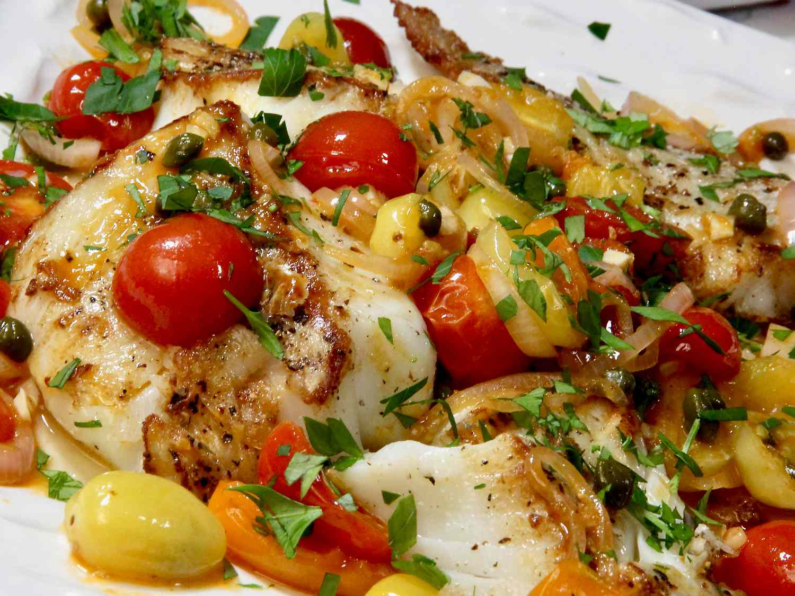

Best Pan Fried Cod with Tomatoes

Description:
This is the best pan fried cod with tomatoes. It's lean, flaky, tender, and luscious. Although it's quick and simple to make, the savory and sweet tomato topping gives it a touch of elegance and great eye appeal.
Ingredients:
-
Tomato Topping:
- 1 pint grape tomatoes, halved
- 1 shallot, thinly sliced
- 2 cloves garlic, minced
- 1 tablespoon red wine vinegar
- 1 tablespoon olive oil
- 1 tablespoon drained capers (optional)
- 1/2 teaspoon salt, or to taste
-
Cod:
- 1 1/2 pounds cod filets
- salt and freshly ground black pepper to taste
- 2 tablespoons olive oil
- 1 tablespoon unsalted butter
- 1 tablespoon chopped parsley for garnish
Steps:
- Combine tomatoes, shallot, garlic, red wine vinegar, olive oil, capers, and salt in a bowl, and set aside.
- About 15 minutes before cooking, remove cod from the refrigerator, so it can come to room temperature. Cut cod into pieces, thoroughly pat filets dry with a paper towel, and generously season both sides with salt and pepper.
- Heat a large skillet over medium-high heat, add olive oil, melt butter, and swirl to coat. Add cod, and do not move the pieces until it is time to flip them over. Cook until fish flakes easily with a fork, 3 to 4 minutes per side. An instant-read thermometer inserted into the center should read 145 degrees F (63 degrees C). Carefully remove the filets from the skillet with a spatula to a serving plate.
- Reduce the heat to medium and In the same skillet, add the tomato mixture. Cook and scrape up any bits stuck to the skillet bottom and stir until the tomatoes just begin to soften, about 2 minutes.
- Spoon tomato mixture over filets, garnish with parsley, and serve.